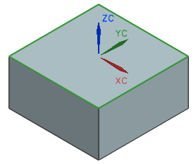

拉伸直线
-
在知识融合导航器中，右击 root 并选择添加子规则。
-
在名称输入框中键入拉伸1。
-
在名称过滤器输入框中键入 ug_extru。
-
在类列表框中选择 ug_extruded。
-
在输入参数列表框中选择 End Limit (Number)。
-
在参数规则输入框中键入下列参数：
-50;
-
点击应用输入
 。
。您需要指定拉伸体的截面对象。
-
在输入参数列表框中选择 profile (List)。
-
在知识融合导航器中，右击直线1 (nx_line)并选择引用。
返回添加子规则对话框，引用的直线被插入到了规则中。
-
在规则参数输入框中，在直线1的后面键入一个逗号，如下所示：
{直线1:,} -
在知识融合导航器中，右击直线2 (nx_line)并选择引用。
-
在规则参数输入框中，在直线2的后面键入一个逗号，如下所示：
{直线1:,直线2:,} -
在知识融合导航器中，右击直线3 (nx_line)并选择引用。
-
在规则参数输入框中，在直线3的后面键入一个逗号，如下所示：
{直线1:,直线2:,直线3:,} -
在知识融合导航器中，右击直线4 (nx_line)并选择引用。
{直线1:,直线2:,直线3:,直线4:} -
点击应用输入
。 -
点击确定。

拉伸1 (ug_extruded)规则将被添加到知识融合导航器中，先前创建的直线被嵌入到拉伸1 (ug_extruded)中的助手对象下方。
 root
root
属性
 拉伸1(ug_extruded)
拉伸1(ug_extruded)
 属性
属性
助手对象
直线1 (nx_line)
直线2 (nx_line)
直线3 (nx_line)
直线4 (nx_line)